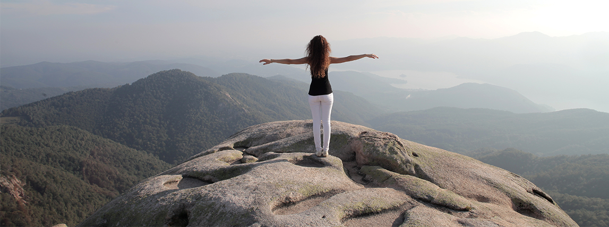
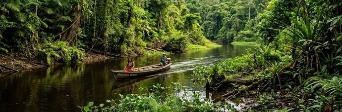

Exemplo de paisagem
Paisagem é um conceito que tem sido utilizado nas artes e na ciência, principalmente na Geografia, na Ecologia e na Arquitetura Paisagista. De acordo com a Convenção Europeia da Paisagem: "designa uma parte do território, tal como é apreendida pelas populações, cujo caráter resulta da ação e da interação de fatores naturais e/ou humanos". É um conceito que mantém uma forte relação com o visual e com o imediatamente percebido.
É um conceito que mantém uma forte relação com o visual e com o imediatamente percebido. Em uma definição do senso comum, paisagem é definida como a porção visível do espaço, bem como sua representação.

Amazônia
Abocanhando 49,29% do território brasileiro, a Amazônia é hoje o maior bioma do mundo, que abrange nove países (Brasil, Guiana, Bolívia, Peru, Equador, Colômbia, Venezuela, Guiana Francesa e Suriname). São cerca de 40 mil espécies de plantas, 300 espécies de mamíferos, 1,3 mil espécies de aves, habitando em 4,196.943 km² de florestas densas e abertas. Embora ampla e inegavelmente rica, abrigando a maior bacia hidrográfica do mundo e uma imensa reserva de madeira, a Amazônia, no entanto, mostra-se frágil. Além de sensível às ações antrópicas, cujas pequenas interferências podem causar danos de proporções irreversíveis, o ecossistema amazônico também sofre com a instabilidade climática e os baixos índices socioeconômicos da região.
Fontes: Cadastro Nacional de UCs, Geoprocessamento ICMBio e Bibliografia consultada: Milaré, E. (2007). Direito do ambiente: doutrina, prática, jurisprudência, glossário. Editora Revista dos Tribunais.
